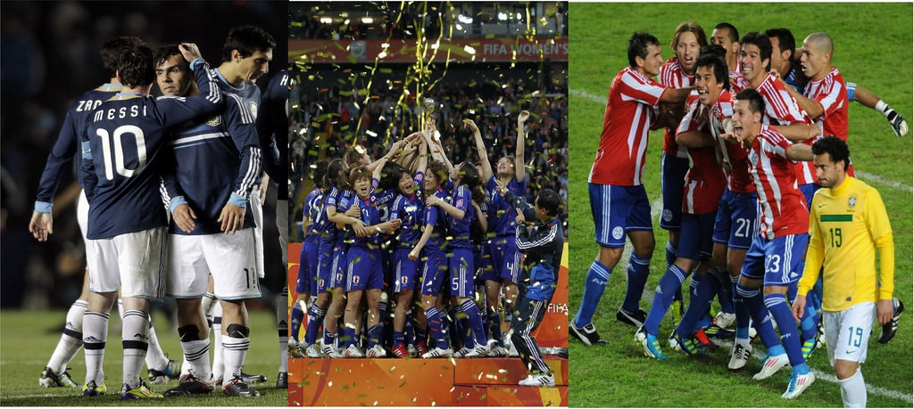

点球时代，改朝换代
24小时之内上演了3场点球大战，场场惨烈，令我称奇。

先是美洲杯一场四分之一决赛中，野兽特维兹的罚失使夺冠热门阿根廷在点球大战中惜败于乌拉圭，东道主就这样无缘四强，又想起了那首《阿根廷别为我哭泣》，无奈这支悲情的豪门不得不再次哭泣了。不过乌拉圭这支南非世界杯四强球队实力的确不容小觑，毕竟它拥有曾在世界杯上叱咤风云的前场三叉戟，由那个令无数球迷倾倒的迭戈·弗兰领衔。
德国女足世界杯的决赛在今天凌晨2:45才上演，但比赛的精彩程度不枉我守候了一整夜。整场比赛美国女足占尽了优势，她们的速度、高度和力量远在日本队之上，技术也不粗糙，强大的综合实力使其牢牢控制着场上局面，抑制住了日本队细腻技术和配合的发挥。这是之前仅靠身体优势的卫冕冠军德国队在面对日本时所没能做到的。然而，尽管美国队创造出无数的机会，但在上半场却一次次浪费着机会，临门一脚的运气总是差那么一点。这也让我有一种不详的预感——如此的挥霍终会付出代价的。不过终于在第69分钟，美国队在一次防守反击中率先打破僵局，前锋摩根接后场精准长传利用较强的个人能力将皮球送入日本队球门远角。在美国队的全面压制——射门次数和进攻威胁程度远远高于对手——下，我本以为比赛就会这样波澜不惊地结束，不料日本队在第81分钟利用美国后卫的失误顽强地将比分扳平，比赛拖入加时赛。加时赛上半场美国队万巴赫头槌破门，将夺冠的希望再次离美国近了一些。加时赛结束前3分钟，奇迹再次发生，奋力一搏的日本队利用角球机会，队长泽穗希抢到前点，以不可思议的方式——神似伊布的蝎子摆尾——再次扳平了比分。120分钟2:2战平，双方进行残酷的点球大战。这时的压力应该抛给了美国队，两次胜利唾手可得，两次与之失之交臂，对冠军的渴望让她们显得过于紧张。而日本队心态则十分放松，能走到这一步已是奇迹，得之，其幸；不得，其命……果然，紧张的美国队员在点球大战中发挥失常，没有了四分之一决赛时面对巴西死里逃生在点球大战中全部命中时的神勇和魄力，反而是面对对手的冲击时的患得患失，最终落败。就这样，不言放弃的日本女足战胜了2届世界杯冠军、2届奥运会冠军美国女足，成为新的世界冠军。尽管全场比赛号称“女足巴萨”的日本队没能发挥出自己的优势和特长，但她们顽强拼搏，坚持到底，最终赢得了胜利和世人的尊敬。
这场比赛刚结束，换至风云足球频道，另一场美洲杯四分之一决赛巴西和巴拉圭的对阵也进行到了加时赛的最后，不尽感叹巴拉圭的铁桶阵如此奏效，能让攻击力突出的巴西久攻不下。于是接着再看一场点球大战吧。想起2003年美洲杯决赛巴西队点球大战击败阿根廷捧杯，2007年又卫冕成功，不知这次面对困境造化如何。结果令人哑然失笑，我所钟爱的巴西大失水准，前4个点球一球未进，惨遭淘汰。
随着日本点球战胜美国登顶世界之巅，阿根廷和巴西两大夺冠热门双双点球悲剧，不禁感叹，这是个点球的时代，改朝换代的时代。